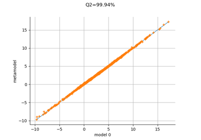
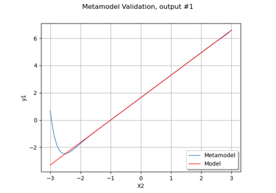
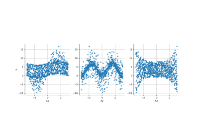
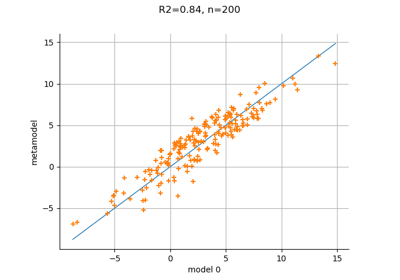
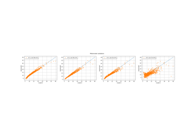
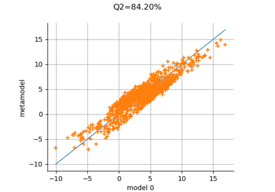

Polynomial chaos metamodel¶
Apply a transform or inverse transform on your polynomial chaos
Apply a transform or inverse transform on your polynomial chaos



Validate a polynomial chaos

Create a full or sparse polynomial chaos expansion
Create a full or sparse polynomial chaos expansion

Create a polynomial chaos metamodel by integration on the cantilever beam
Create a polynomial chaos metamodel by integration on the cantilever beam


Create a polynomial chaos metamodel from a data set
Create a polynomial chaos metamodel from a data set

Create a polynomial chaos for the Ishigami function: a quick start guide to polynomial chaos
Create a polynomial chaos for the Ishigami function: a quick start guide to polynomial chaos


Polynomial chaos expansion cross-validation
Polynomial chaos expansion cross-validation

Polynomial chaos is sensitive to the degree
Polynomial chaos is sensitive to the degree

Create a sparse chaos by integration
Create a sparse chaos by integration